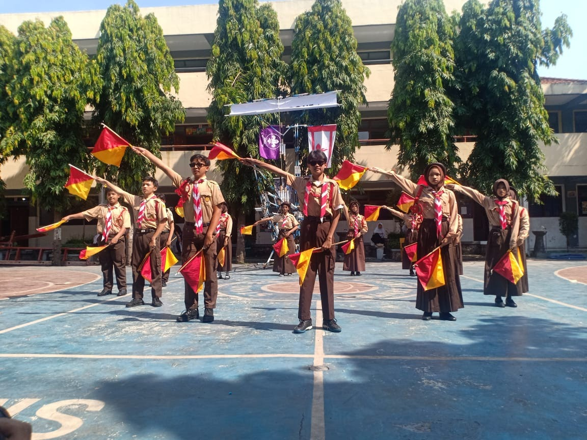

Membentuk Karakter Disiplin, Mandiri, dan Cinta Tanah Air

Ekstrakurikuler Pramuka di SMP Setia Negara merupakan kegiatan yang bertujuan untuk membentuk karakter siswa yang disiplin, mandiri, serta memiliki jiwa kepemimpinan dan cinta tanah air. Kegiatan ini dilaksanakan secara rutin dengan berbagai aktivitas yang menarik dan edukatif.
Melalui kegiatan Pramuka, siswa diajarkan berbagai keterampilan seperti kerja sama tim, kepemimpinan, serta kemampuan bertahan dan beradaptasi di alam terbuka.